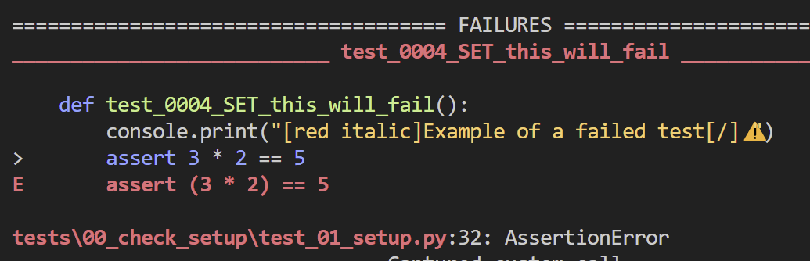

PyTest 101¶
Test discovery¶
Before we look at the body of a test, we will first look at naming conventions of test function, classes, files and folders.
The default folder is tests. We can configure testpaths in pytest.ini for PyTest to search the listed folders:
__init__.py in tests folder/subfolders?
No. But if we don't and two tests have same name then there will be a name collision.
Using __init__.py will make each test have a unique namespace.
Conventions¶
https://docs.pytest.org/en/stable/example/pythoncollection.html
We can change default in pytest.ini:
Create a test¶
Function based¶
If we have a function src\some_function.py and we want to test it, we can run this function within a test and PyTest will excute it and store results etc:
def test_some_function_works.py():
actual_result = some_function()
expecterd_result = "expected result values here"
assert actual_result == expected_result, "(optional) output message if not equal"
Class based¶
Using a class based test can group tests together and we can also apply PyTest features to the class and thus all the methods in it.
For discovery, both the class and methods must follow the naming convention whether default or custom.
(see above)
For class: Test*
For methods test_ or _test
class TestSample:
def test_0031_SET_add_num(self):
"""fn test in a class"""
assert add(1, 2) == 3
def test_0032_SET_add_num_will_fail(self):
"""failing fn test in a class"""
console.print("[red italic]Example of failed test[/]⚠️")
assert add(1, 2) == 5
Run a test¶
To run tests we run python -m pytest. We can run just pytest but running it as a module adds the path to sys.path and can avoid any future issues.
 https://docs.pytest.org/en/stable/how-to/usage.html#other-ways-of-calling-pytest
https://docs.pytest.org/en/stable/how-to/usage.html#other-ways-of-calling-pytest
I use Rich and PyBoxen for console colouring. Some notes are here https://pytest-cookbook.com/toolbox/rich_pyboxen/.
Let's run two tests, one PASSED and one FAILED...
In 00_check_setup\test_01_setup.py there are two tests:
def test_0001_SET_pass():
sleep(1)
console.print("\n[blue bold]Testing Rich[/]\n")
assert True
# A test fail to show as an example
def test_0004_SET_this_will_fail():
console.print("[red italic]Example of a failed test[/]⚠️")
assert False
A failed test with -v verbosity gives: 
We will look at verbosity and outputs later...
We can run this easily with python -m pytest -vs -k 0001 (-k is a 'like' and with unique test numbering it can be a convenient way to select a test, which we will dive into this deeper later...).
I will explain my test naming convention later...
Selecting tests¶
Locations¶
We can select tests by their location, module, class or function:
https://docs.pytest.org/en/stable/how-to/usage.html#specifying-which-tests-to-run
These are called nodes:
python -m pytest .\tests\00_check_setup\test_01_setup.py
python -m pytest .\tests\00_check_setup\test_01_setup.py::test_0001_SET_pass
python -m pytest -vs .\tests\00_check_setup\test_04_class_based.py::TestSample::test_0031_SET_add_num
-k for 'like'¶
We can select test that are 'like' with the -k option:
python -m pytest -k 0001 to select a specific id or
python -m pytest -k SET will select all those that contain 'SET' in test name.
We can combine 'not', 'or', 'and':
python -m pytest -vs -k "0211 or 0212" - note that single or double quotes are needed.
python -m pytest -k "not SQL" will get all tests that contain SET (case insensitive) or SQL.
This can get tricky for more complex queries and in those case we will use 'markers' particularly as we can create dynamic markers that are based on Python list manipulation. We will se this later.
@tests_to_run.txt¶
To

Markers¶
Definition¶
Markers are 'tags' which we can add to tests using @pytest.mark.tag_name and we can then select a particular marker using pytest -m pytest -m tag_name.
They are decorators and they are syntactic sugar for passing a function to another function:
def make_pretty(func):
def inner():
print("I got decorated")
func()
return inner
@make_pretty
def ordinary():
print("I am ordinary")
ordinary()
This is actually:
ordinary = make_pretty(ordinary)
We can assign the name of the marker after @pytest.mark
import pytest
@pytest.mark.tag_name # needs to be imported
def test_use_marker_tag_name():
assert True
-k option, we can use add/or/not:
python -m pytest -m 'outer or inner'
Classes and modules¶
https://docs.pytest.org/en/stable/example/markers.html#marking-whole-classes-or-modules

Registering¶
We do not need to register them with pytest.ini provided we do not have --strict-markers in addopts. If we do, we will get an error, if we don't we will get warnings.
In our pytest.ini we have:
markers =
;add markers of group tests - can use
; after colon is optional description
setup: set up tests
sanity: sanity tests
mocks: all mocks
joke_mocks: mocks for jokes
add: test add
inner_marker: an inner marker
outer_marker: an outer marker
outer
inner
deposit
withdrawal
banking
In this case above, if we have
then any markers not registered will cause an error.Calling markers¶
If we run python -m pytest -m sanity we will get all those that have a marker of sanity.
We can also use not: python -m pytest -m "not sanity"
We can also mark a whole Class and all method tests within will be selected.
Multiple markers¶
Multiple markers: https://github.com/pytest-dev/pytest/issues/6142
python -m pytest -m "sanity or outer" will select all tests with either sanity or outer as marks. It works in the same way as the -k flag and we can use not and and.
Dynamic markers¶
We will not discuss this yet but it is worth mentioning because managing 500+ test markers is best done dynamically...
We can use a hook pytest_collect_modifyitems()...
Built in markers¶

@pytest.mark.skip¶
Rather than comment out tests, we can mark them to be skipped and they will not be selected.
@pytest.mark.skipif¶
We can skip conditionally:
@pytest.mark.xfail¶
We may have a test that we know will fail but we want to consider that a pass.
We can xfail the test and it will not result in a failed test but be marked as an xfail.
What if the xfail actually passes? We want to know this and it will be marked not as a fail but an xpass - unexepectedly passes.
There are examples of this in the set of tests we ran on PFS at start.
Some more detailed information is here: https://docs.pytest.org/en/stable/how-to/skipping.html#xfail-mark-test-functions-as-expected-to-fail

Markers for fixtures¶
We will cover this when we look at fixtures.
Output options¶
https://docs.pytest.org/en/8.2.x/how-to/output.html#managing-pytest-s-output
pytest --showlocals # show local variables in tracebacks
pytest -l # show local variables (shortcut)
pytest --no-showlocals # hide local variables (if addopts enables them)
pytest --capture=fd # default, capture at the file descriptor level
pytest --capture=sys # capture at the sys level
pytest --capture=no # don't capture
pytest -s # don't capture (shortcut)
pytest --capture=tee-sys # capture to logs but also output to sys level streams
pytest --tb=auto # (default) 'long' tracebacks for the first and last
# entry, but 'short' style for the other entries
pytest --tb=long # exhaustive, informative traceback formatting
pytest --tb=short # shorter traceback format
pytest --tb=line # only one line per failure
pytest --tb=native # Python standard library formatting
pytest --tb=no # no traceback at all
python -m pytest -k 0004 --tb=no to see a failed test with various tracebck levels.
This may be useful when needed:
Verbosity¶
We can use one of these flags for increasing verbosity:
-v, -vv, -vvv
Console ouput¶
By default, PyTest suppresses console output to avoid 'clutter'.
If we want to use print statements, we need to use the -s flag. It can be combined with the -v flag -vs which is what I tend to use by default.
-q for quiet¶
This means 'quiet'.
---durations¶
https://docs.pytest.org/en/8.3.x/how-to/usage.html#profiling-test-execution-duration

NB We have our CSV report that gives duration for each test so that we can create our own 'durations' report.
-x ---maxfail¶
---setup-show¶
Used to see the order of execution.
---collectonly¶
This will show what tests will be run without running tess.
-r for report¶
https://docs.pytest.org/en/8.2.x/how-to/output.html#producing-a-detailed-summary-report
f - failed
E - error
s - skipped
x - xfailed
X - xpassed
p - passed
P - passed with output
Special characters for (de)selection of groups:
a - all except pP
A - all
N - none, this can be used to display nothing (since fE is the default)
If we run pytestpython -m pytest .\tests\00_check_setup\ -rx we get a short test summary at end of test run of just XFAIL:
CSV Outputs¶
https://pytest-cookbook.com/pytest/pytest_test_management/ has more detail on test management and the use of a test naming convention.
We can use pytest-csv but our custom local plugin conftest.py can do this for us.
There is an explainer video for this and we will look at this a bit later and a sample line is:
This is test_id|test_name|test_node|result|duration.
Given these details and the name of the CSV file containing the run_date and unique run_id, we can do a range of reports on our tests over many differing runs.
These can be loaded into and SQL DB to provide comprehensive analysis.
We can use other Python libraries to analyse and display this data.
HTML Reports¶
We can also create an html report with pytest-html. A sample report is in the reports folder.
We can run this with python -m pytest --html=reports/report.html --self-contained-html (see COMMANDS.md in root folder).
Coverage Reports¶
With python -m pytest --cov-report html --cov . (note end .) we get a coverage report as seen in the folder htmlcov.
There is a .coverage file created in the root of the project which requires processing, as done by the above command to give the folder htmlcov with an index.html.